무시무시한 사냥꾼들
역사상 가장 강력했던 육식공룡들의 세계
거대 포식자들
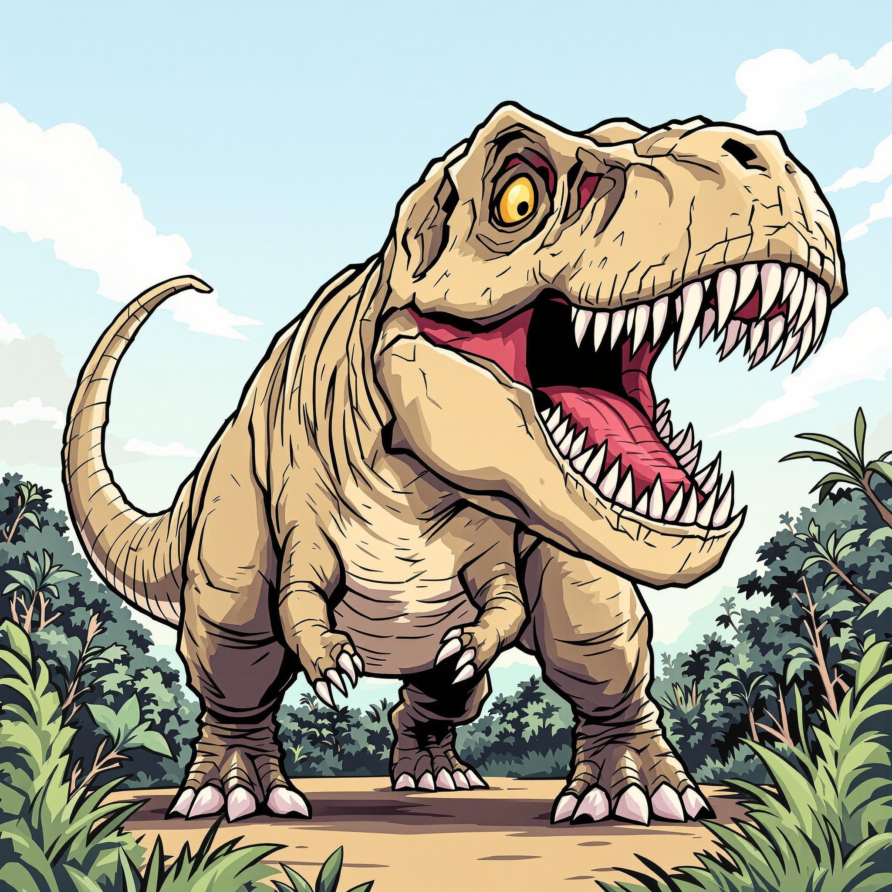
티라노사우루스 렉스
- 시대: 백악기 후기
- 크기: 길이 12-14m
- 무게: 8-14톤
- 서식지: 북아메리카
'폭군 도마뱀 왕'이라는 뜻의 티라노사우루스 렉스는 역사상 가장 유명한 육식 공룡입니다. 백악기 후기에 북아메리카에 살았으며, 가장 강력한 물림힘(약 6,000kg)을 가진 육상 동물 중 하나였습니다.
최근 연구 결과
- 어린 시절 깃털 덮개 존재 가능성
- 성체도 일부 깃털 보유 추정
- 과거 추정보다 높은 지능
- 무리 사냥 가능성
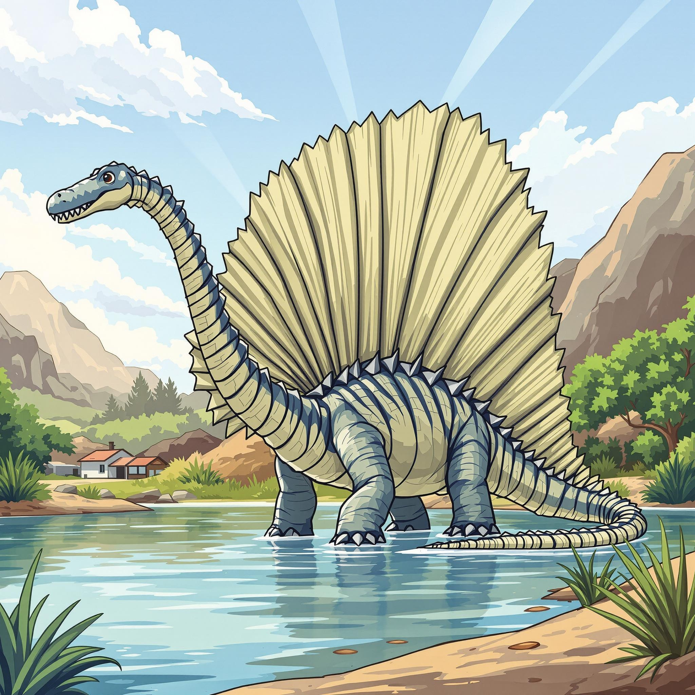
스피노사우루스
- 시대: 백악기 중기
- 크기: 길이 15-18m
- 무게: 7-20톤
- 특징: 등의 돛 모양 돌기
티라노사우루스보다 더 큰 육식공룡으로, 수생 생활에 적응한 특징을 가졌습니다.
특이사항
- 물고기 사냥에 특화된 긴 주둥이
- 체온 조절 기능의 등 돛
- 반수생 생활에 적합한 다리 구조
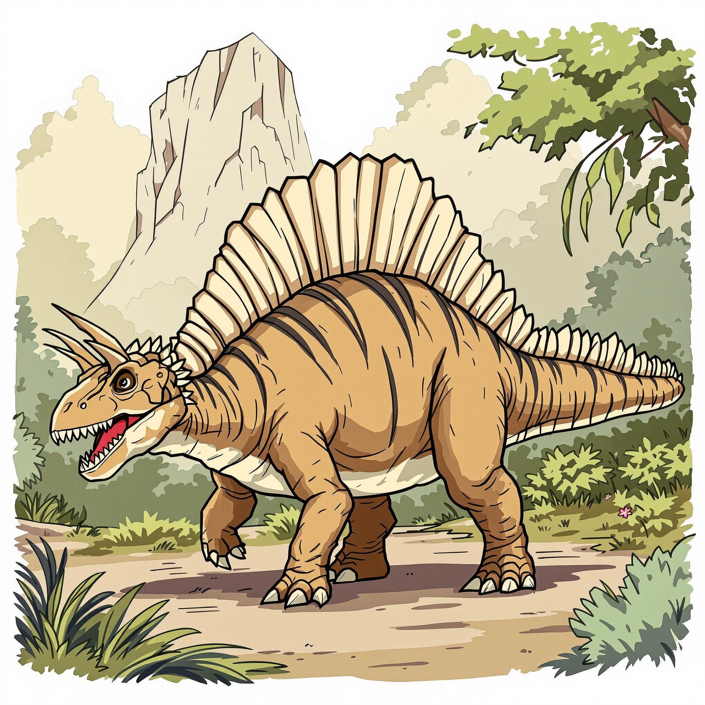
아크로칸토사우루스
- 시대: 백악기 초기
- 크기: 길이 11.5m
- 무게: 6-7톤
- 특징: 등뼈의 높은 돌기
'높은 가시 도마뱀'이라는 뜻으로, 등에 높은 돌기가 있는 대형 육식공룡입니다.
특이사항
- 강력한 앞다리와 발톱
- 사우로포드 사냥에 특화
- 등의 돌기는 근육 부착에 사용
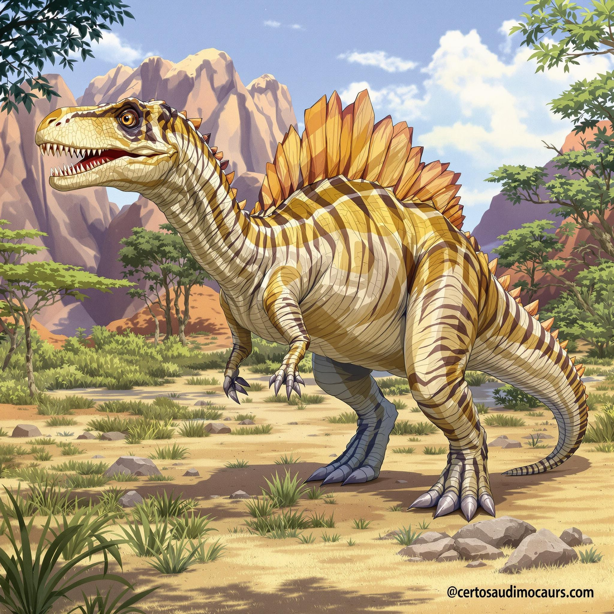
케라토사우루스
- 시대: 쥐라기 후기
- 크기: 길이 6-7m
- 무게: 1-2톤
- 특징: 코뿔과 머리의 돌기
'뿔 도마뱀'이라는 뜻으로, 코에 특징적인 뿔이 있는 중형 육식공룡입니다.
특이사항
- 머리의 장식용 뿔과 돌기
- 날카로운 이빨과 발톱
- 빠른 주행 능력
날렵한 사냥꾼들
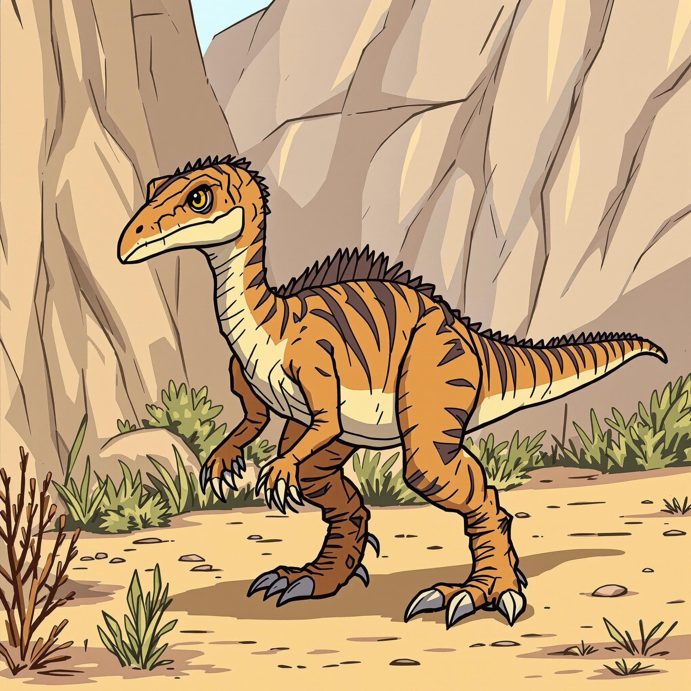
벨로시랩터
- 시대: 백악기 후기
- 크기: 길이 2m
- 무게: 15-20kg
- 특징: 발톱과 깃털
영화에서 보다 실제로는 훨씬 작았지만, 매우 영리하고 빠른 공룡이었습니다.
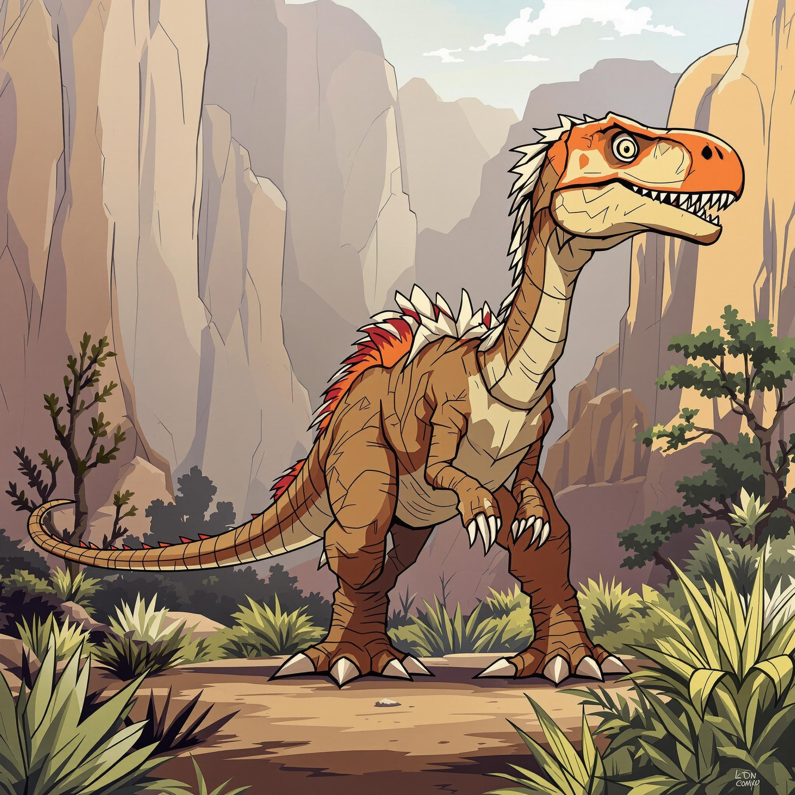
유타랩터
- 시대: 백악기 초기
- 크기: 길이 6m
- 무게: 500-1000kg
- 특징: 가장 큰 랩터류
알려진 랩터류 중 가장 큰 종으로, 대형 초식동물도 사냥할 수 있었습니다.
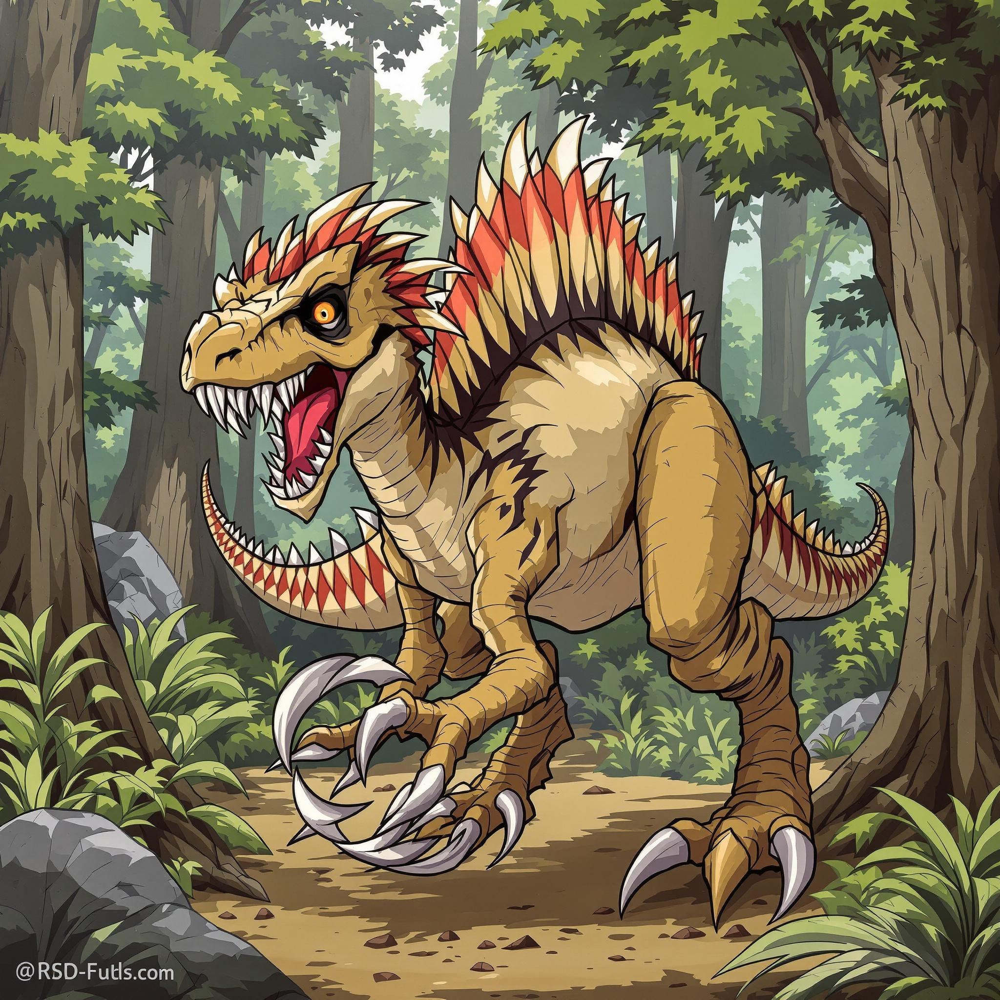
데이노니쿠스
- 시대: 백악기 초기
- 크기: 길이 3.4m
- 무게: 70-100kg
- 특징: 큰 발톱과 민첩성
'무서운 발톱'이라는 뜻으로, 현대 조류와의 연관성을 보여주는 중요한 화석입니다.
알로사우루스과
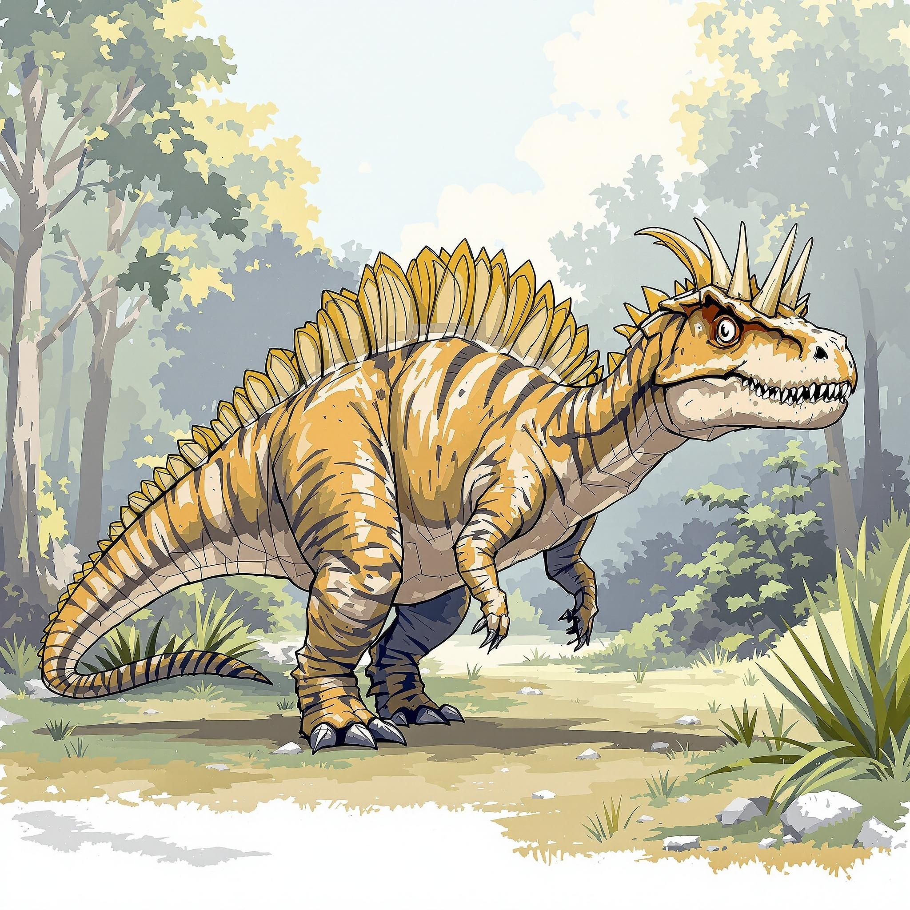
알로사우루스
- 시대: 쥐라기 후기
- 크기: 길이 8-12m
- 무게: 2-3톤
- 특징: 강력한 턱과 발달된 앞발
쥐라기의 최상위 포식자로, 효율적인 사냥 능력을 가졌습니다.
사냥 특징
- 날카로운 이빨과 강력한 턱
- 발달된 앞발로 사냥감 제압
- 무리 사냥 가능성
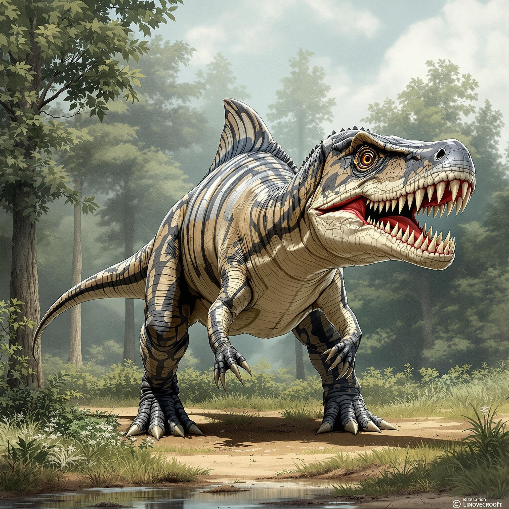
카르카로돈토사우루스
- 시대: 백악기 중기
- 크기: 길이 12-13m
- 무게: 6-15톤
- 특징: 상어 이빨 모양의 치아
'상어 이빨 도마뱀'이라는 뜻으로, 거대 초식공룡을 사냥했습니다.
사냥 특징
- 날카로운 톱니 모양 이빨
- 강력한 턱힘
- 대형 초식공룡 사냥 특화
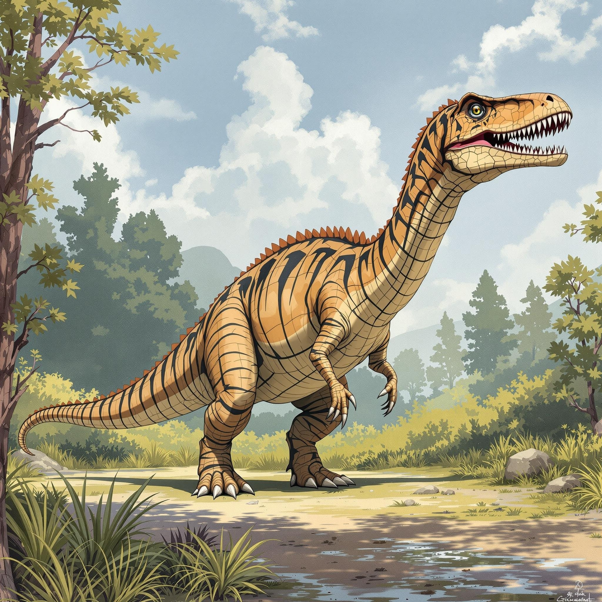
기가노토사우루스
- 시대: 백악기 후기
- 크기: 길이 12-13m
- 무게: 6-8톤
- 특징: 티라노사우루스급 크기
'거대한 남방 도마뱀'이라는 뜻으로, 남아메리카의 최상위 포식자였습니다.
사냥 특징
- 강력한 턱과 이빨
- 아르헨티노사우루스 사냥 가능
- 빠른 주행 능력
중형 포식자들

케라토사우루스
- 시대: 쥐라기 후기
- 크기: 길이 6m
- 무게: 1톤
- 특징: 코 위의 뿔
'뿔 도마뱀'이라는 뜻으로, 독특한 머리 장식이 특징입니다.
사냥 특징
- 날카로운 이빨
- 빠른 달리기 능력
- 과시용 머리 장식

바리오닉스
- 시대: 백악기 전기
- 크기: 길이 8.5m
- 무게: 1.7톤
- 특징: 악어 같은 주둥이
'다른 발톱'이라는 뜻으로, 물고기 사냥에 특화되었습니다.
사냥 특징
- 물고기 잡이에 적합한 긴 주둥이
- 강력한 앞발 갈고리
- 수생 환경 적응

수호미무스
- 시대: 백악기 후기
- 크기: 길이 3m
- 무게: 60kg
- 특징: 타조와 비슷한 체형
'타조 모방자'라는 뜻으로, 현대 타조와 비슷한 모습이었습니다.
사냥 특징
- 매우 빠른 달리기 능력
- 작은 동물 사냥
- 민첩한 움직임
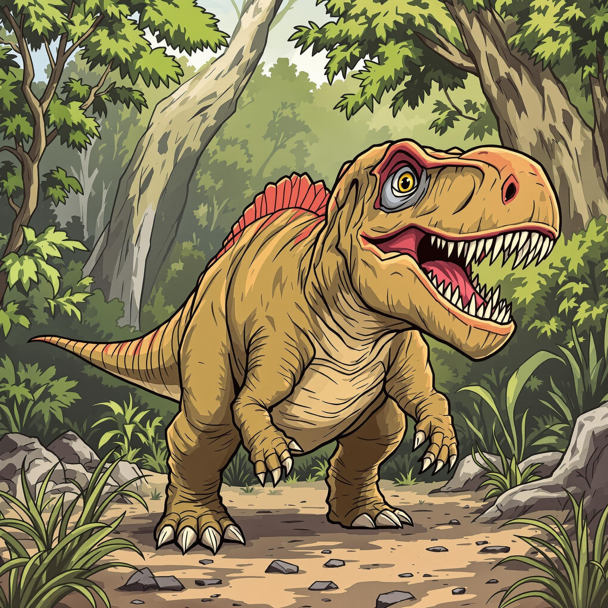
메갈로사우루스
- 시대: 쥐라기 중기
- 크기: 길이 6m
- 무게: 1톤
- 특징: 최초로 발견된 공룡
과학적으로 최초로 명명된 공룡으로, 중형 육식공룡의 대표적인 예시입니다.
사냥 특징
- 강력한 턱과 이빨
- 빠른 달리기 능력
- 효율적인 사냥 전략
특이한 육식공룡들

디모르포돈
- 시대: 쥐라기 전기
- 크기: 날개 폭 1.4m
- 무게: 2kg
- 특징: 두 종류의 이빨
'두 가지 형태의 이빨'이라는 뜻으로, 독특한 치아 구조가 특징입니다.
사냥 특징
- 물고기 잡이에 특화된 이빨
- 날카로운 발톱
- 해안가 사냥
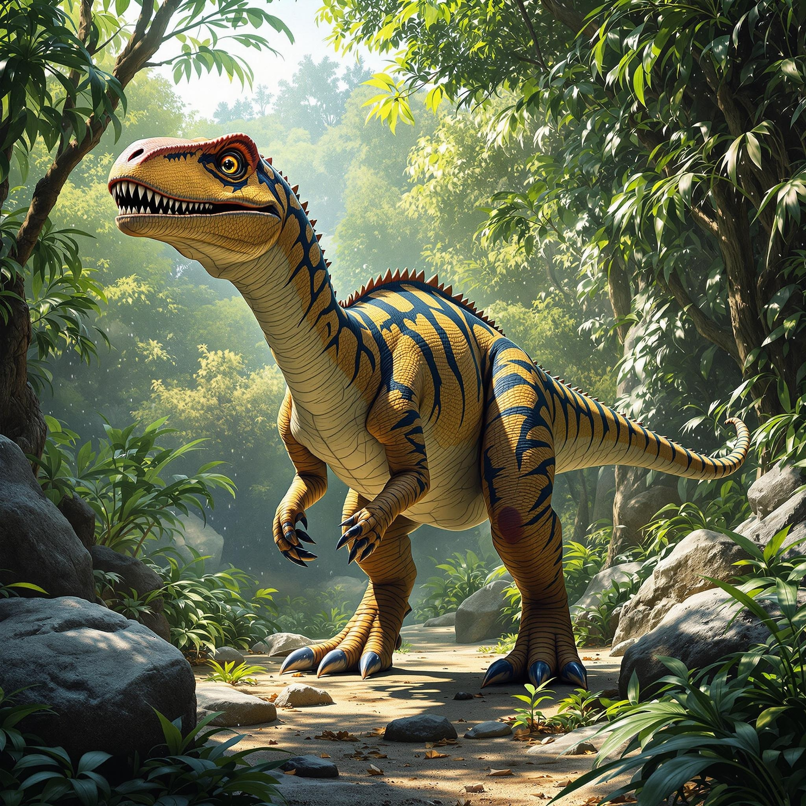
마지웅가사우루스
- 시대: 백악기 후기
- 크기: 길이 6m
- 무게: 1톤
- 특징: 짧은 주둥이
마다가스카르의 독특한 육식공룡으로, 특이한 두개골 구조가 특징입니다.
사냥 특징
- 강력한 물림힘
- 단단한 두개골
- 중소형 동물 사냥
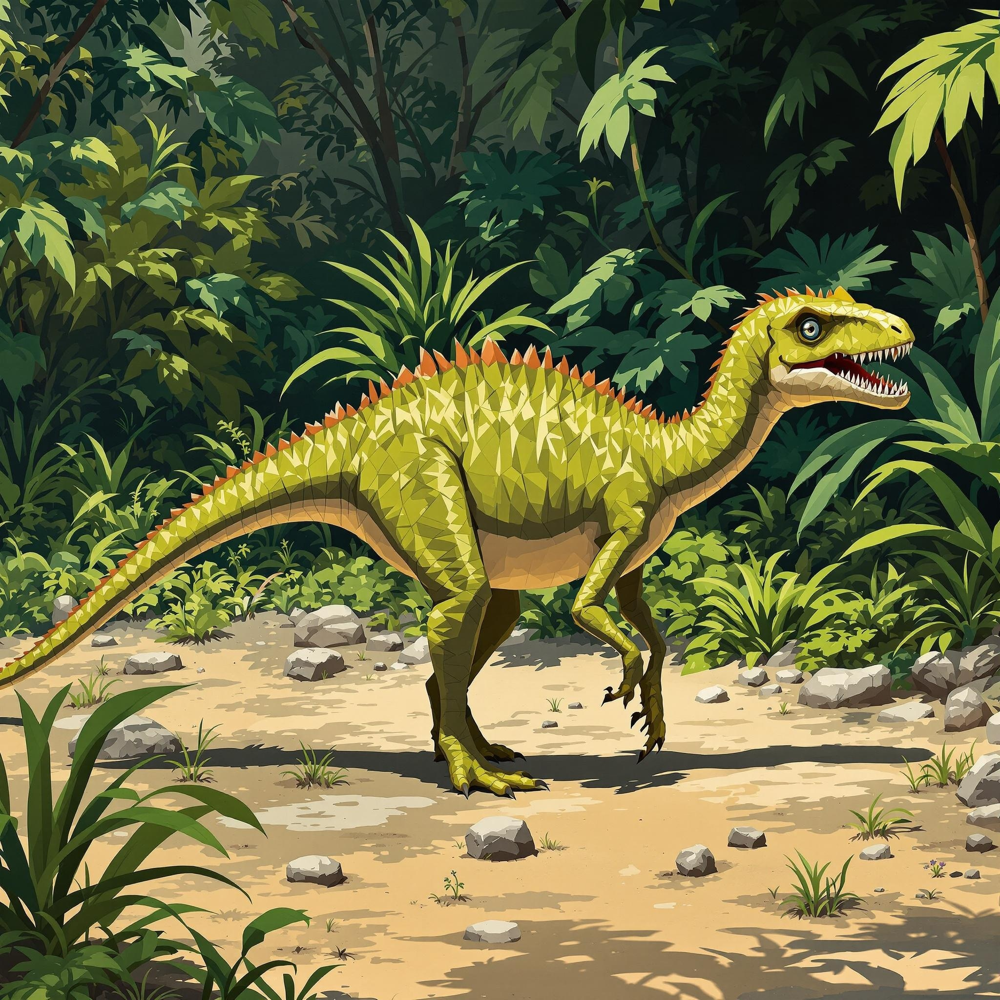
델타드로메우스
- 시대: 백악기 후기
- 크기: 길이 2m
- 무게: 10kg
- 특징: 매우 빠른 주행 능력
'삼각형 달리기꾼'이라는 뜻으로, 작지만 매우 빠른 육식공룡이었습니다.
사냥 특징
- 최고의 주행 속도
- 민첩한 움직임
- 작은 동물 사냥 특화